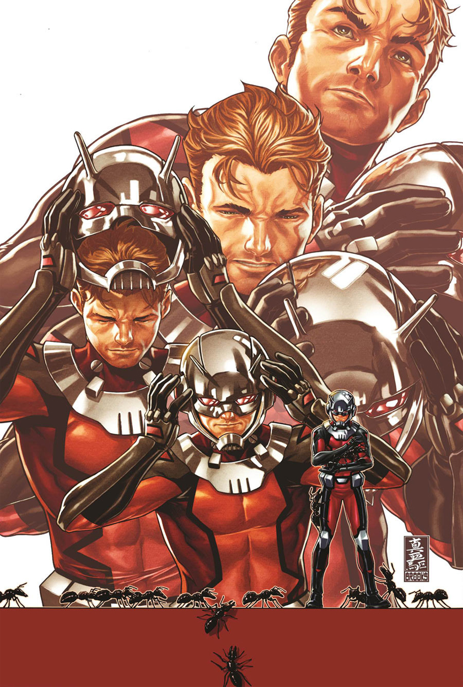
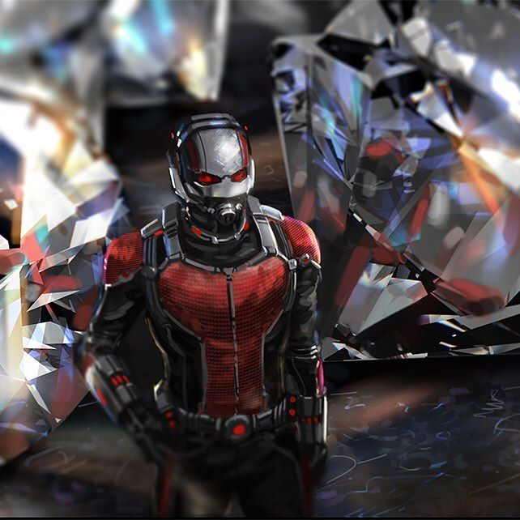
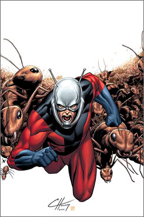

Хэнк Пим
Доктор Генри Джонатан Пим, более известный как Хэнк Пим — первый и самый известный Человек-муравей, созданный редактором Стэном Ли, сценаристом Ларри Либером и художником Джеком Кирби, впервые появившийся в Tales to Astonish № 27 в январе 1962 года и дебютировавший в качестве Человека-муравья в выпуске № 35 в сентябре того же года. Лучший друг Дженет ван Дайн, известной как супергероиня по имени Оса, вместе с которой является одним из основателей Мстителей. Известен как создатель робота Альтрона, ставшего впоследствии одним из главных врагов Мстителей. Также выступал под именами Великан, Голиаф, Жёлтый жакет и Оса. В мае 2011 года Хэнк Пим занял 67 место в списке «Сто лучших персонажей комиксов всех времён» по версии IGN
Скотт Лэнг
Второй Человек-муравей, носивший имя Скотт Лэнг, был создан писателем Дэвидом Мичелини и художником Джоном Бёрном. Он впервые появился в «The Avengers (англ.)русск.» № 181 (март 1979), а в «Marvel Premiere (англ.)русск.» #47 (апрель 1979) взял имя Человек-муравей. Скотт Лэнг был вором, который украл костюм Человека-муравья и уменьшающий газ у Хэнка Пима, чтобы спасти свою дочь Кэсси от сердечного заболевания. Позже ушёл от преступной жизни и начал карьеру супергероя при поощрении Хэнка Пима[2], взяв его прежнее прозвище Человек-муравей. Был компаньоном Фантастической четвёрки[3], позже стал членом Мстителей. Был убит обезумевшей Алой Ведьмой вместе с Виженом и Соколиным глазом во время распада Мстителей[4]. Его дочь, Кассандра, приняла на себя его героическую мантию и стала супергероиней по имени Высота в составе Молодых Мстителей. Эрик О’Греди
Третий Человек-муравей создан писателем Робертом Киркманом и художником Филом Хестером и впервые появился в «The Irredeemable Ant-Man» № 1 в сентябре 2006 года. Эрик О’Греди был агентом организации Щ.И.Т. и случайно наткнулся на костюм Человека-муравья в штаб-квартире организации[5]. Он обладает низкой моралью и готов обманывать, воровать и манипулировать людьми для того, чтобы продвигаться в жизни. Эрик украл костюм для своих собственных эгоистичных планов, которые включают использование своего статуса как «супергероя», чтобы соблазнять женщин[6] и унижать и мучить других[7]. Был членом Инициативы, Громовержцев и Тайных Мстителей. В мае 2011 года Эрик О’Греди занял 82 место в списке «Сто лучших персонажей комиксов всех времён» по версии IGN